Despite widespread adoption of budgeting tools, overspending remains common.
Research
Research showed that the core problem wasn't data availability—but interpretation and action.
Wally.
AI-driven personal finance platform
Platform
Web / Mobile App
Role
Product Designer · UX/UI Designer
Timeline
Nov 2025 – Dec 2025 (6 weeks)
Team
2-person team (Product/UX + Engineering)
Tools
Figma, Next.js, VS Code, Github
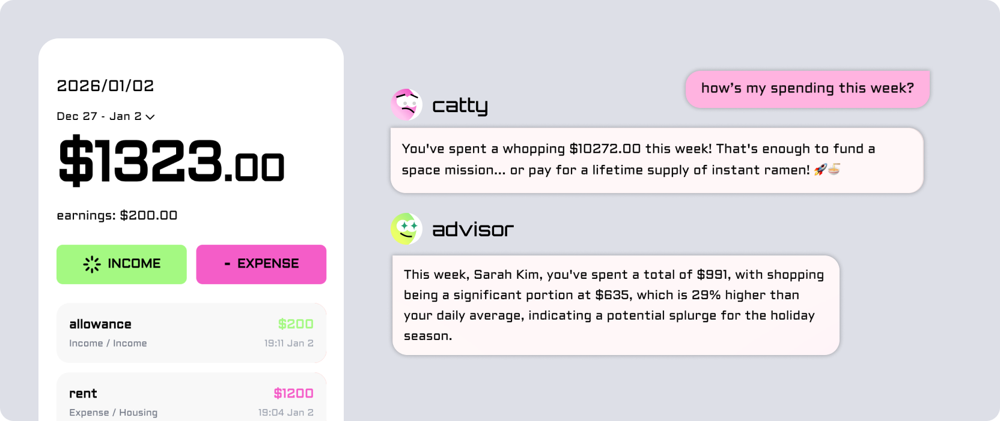
Why does awareness of spending
not always translate into behavior change?
Wally is an AI-driven personal finance platform designed to help users change spending behavior, not just track expenses.
While most budgeting apps focus on dashboards and transaction logs, Wally reframes budgeting as a behavioral and emotional problem. By combining conversational AI with insight-driven reports, Wally helps users understand why they overspend and how to intervene—before overspending becomes habitual.
Despite widespread adoption of budgeting tools, overspending remains common.
Research showed that the core problem wasn't data availability—but interpretation and action.
Source: Academy Bank, 2025
Even with tools available, the gap between "knowing" and "doing" remains high due to behavioral barriers.
If users receive emotionally aware, goal-based feedback at the right moment, they will be more likely to change spending behavior.
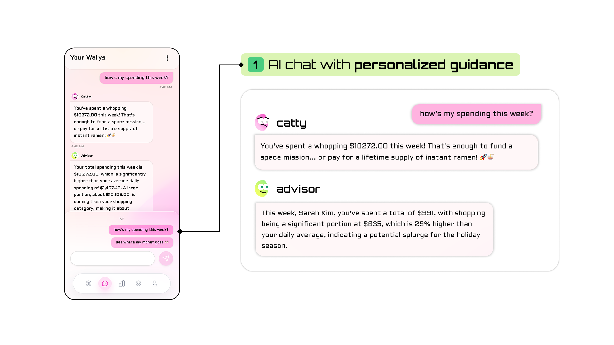
Goal Setting
Define target amount and timeframe
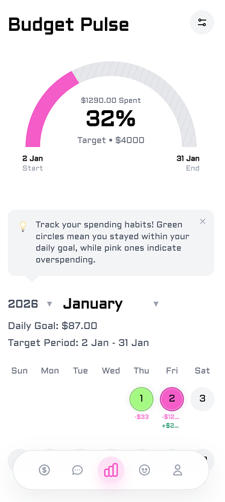
Daily Tracking
Monitor daily spending against goal
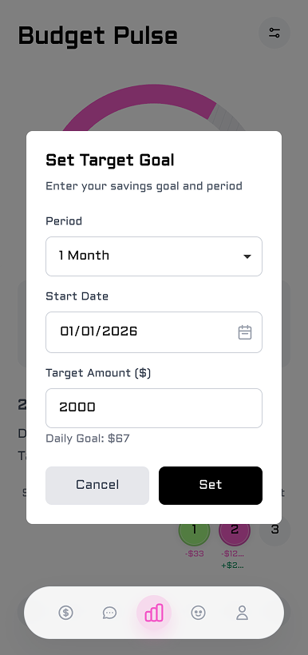
Report Page
Review daily performance and spending patterns
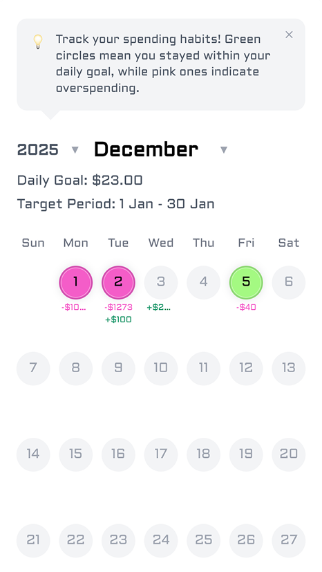
Spending Breakdown
Visualize spending distribution by category
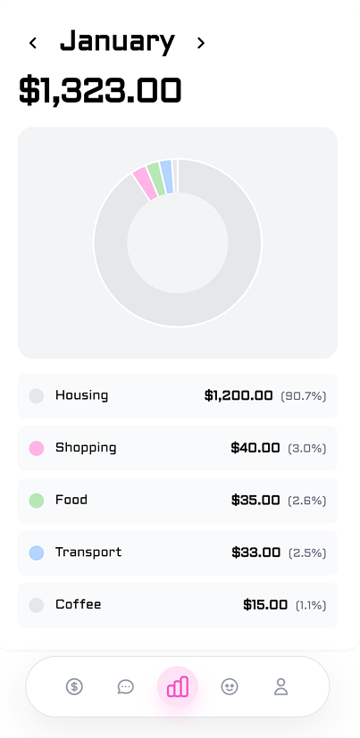
This shifted budgeting from "tracking mistakes" to understanding behavioral triggers.
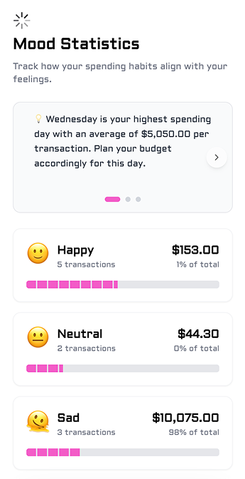


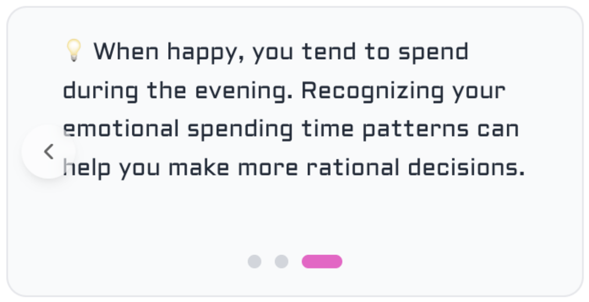
Period: Nov 28 – Dec 2, 2025
Method: Post-usage survey & qualitative feedback
To evaluate how users perceived Wally after hands-on use, I conducted a user survey focused on clarity, usefulness, and behavioral impact.
“The mood-based insights were especially helpful.”
— User feedback
Based on the survey findings, I identified clear follow-up actions:
These insights directly informed subsequent iterations of the report page and interaction design.
Period: Dec 1, 2025
Participants: 5 users
Method: Open card sorting focused on report page structure and feature comprehension
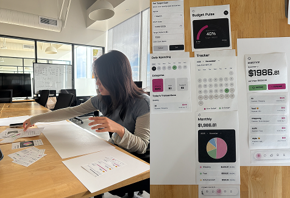
The report page became the core reflection and decision-making moment. Based on card sorting findings, I redesigned the structure to improve clarity and reduce cognitive load.
Before:
After:
Before

After

Login
User authentication and account access
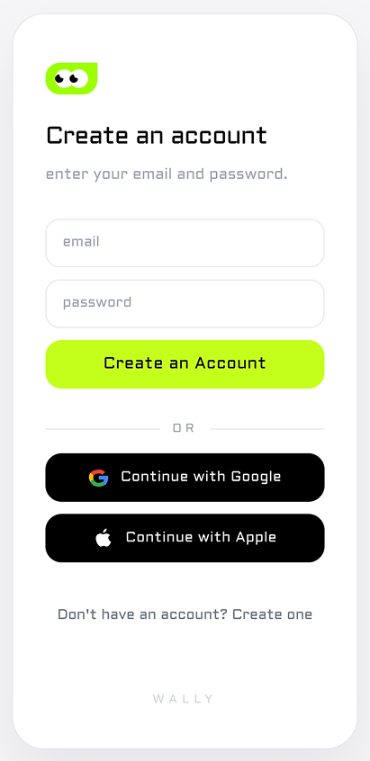
Main Home
Overview of daily goal progress and quick access to insights
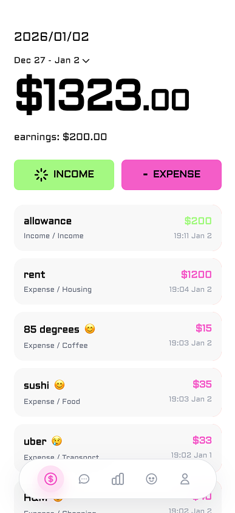
Expense Entry
Record spending transactions with category and mood
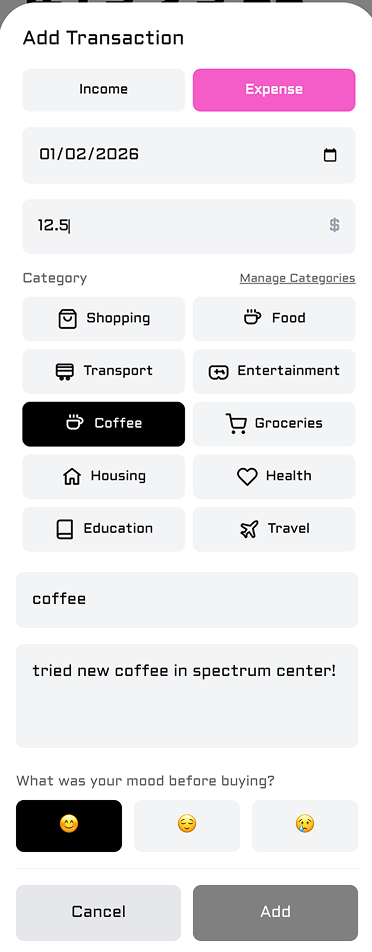
Mood Page
Track spending patterns by emotional state
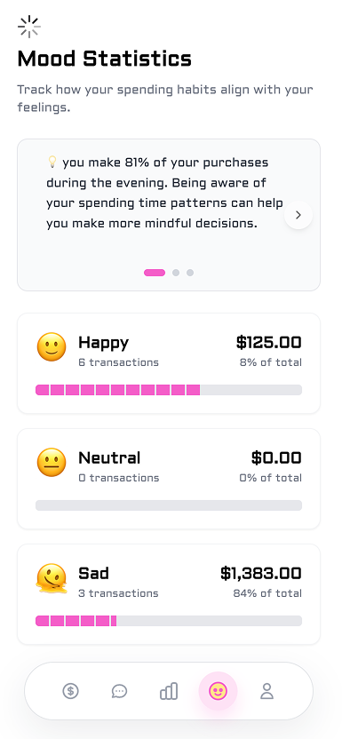
AI Chat
Receive personalized, goal-based guidance
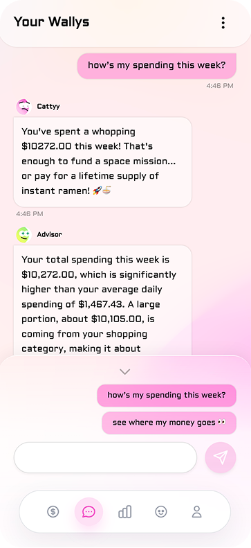
AI Chat
Receive personalized, goal-based guidance
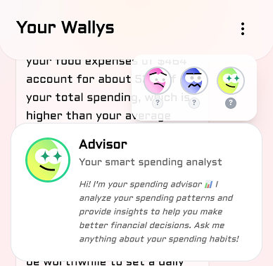
Goal Setting
Define target amount and timeframe
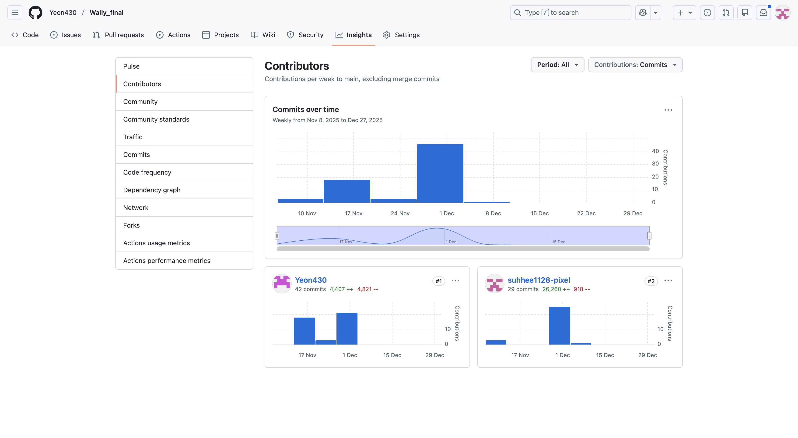
Main Home
Overview of daily goal progress and quick access to insights
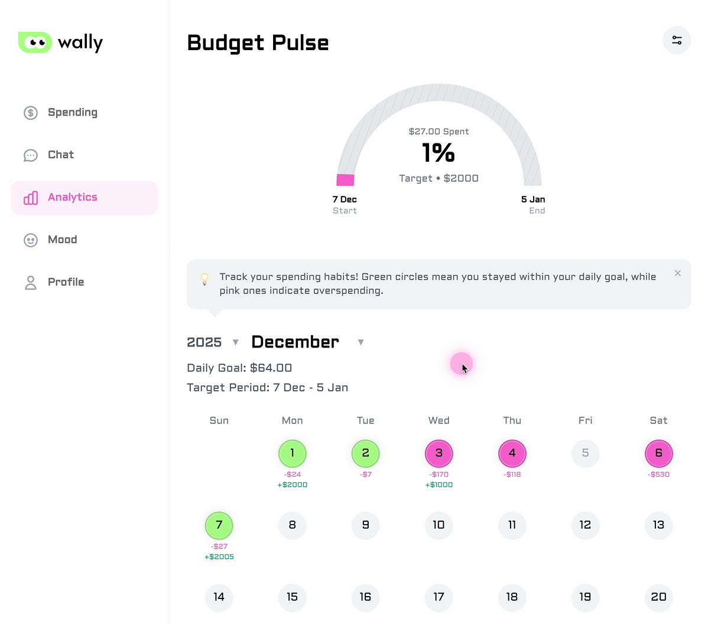
Report Page
Review daily performance and spending patterns
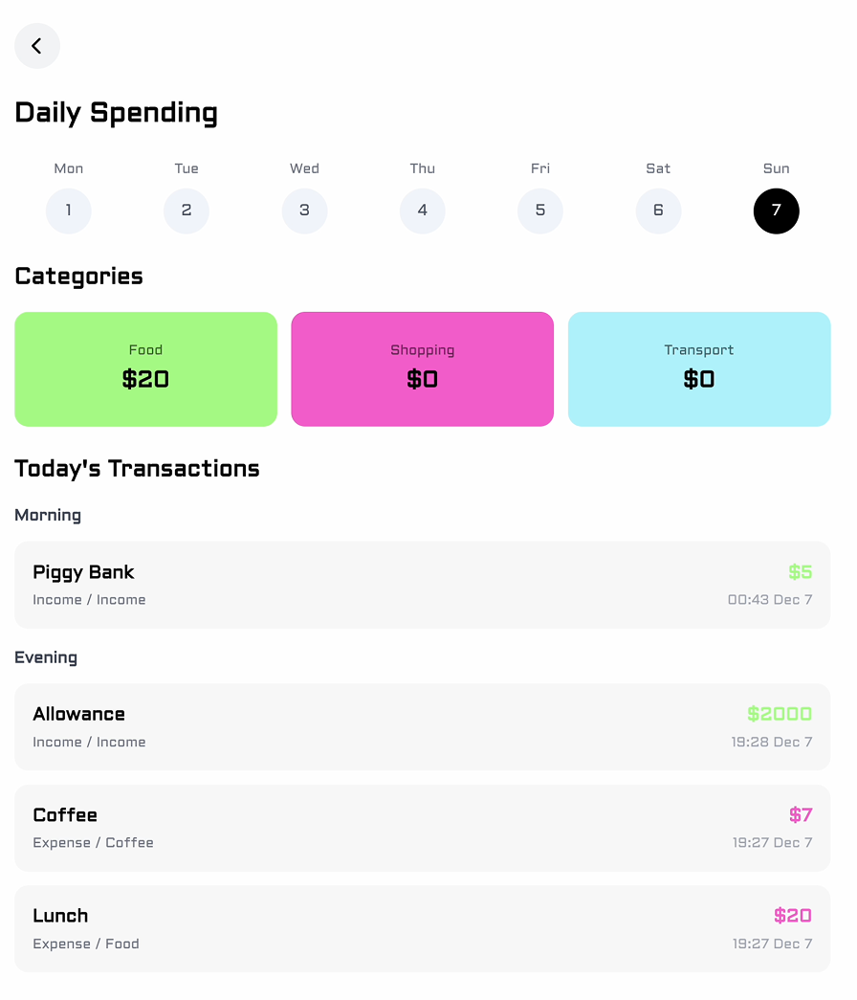
This project was built by a 2-person team, with me owning the product experience end to end.
This ensured the product was production-aware and scalable, not conceptual.
Designing behavior change requires aligning psychology, system constraints, and timing—not just good UI. Wally strengthened my belief that strong product design sits at the intersection of human psychology, product strategy, and technical constraints.